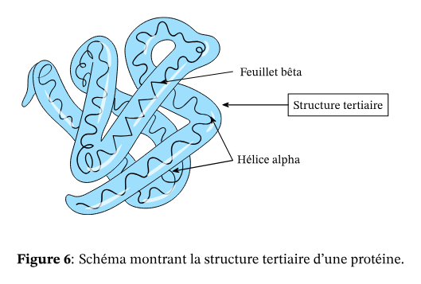

Les protéines sont constitués de l’association d’un acide -aminé (fonction amine) et d’une fonction acide carboxylique sur un même carbone. Elle sont dont des gros peptides.
Les protéines ont différents niveaux d’organisation qui forment des structures.
Structure primaire
La structure primaire d’une protéine représente sa séquence en acides-animés. Elle est produite par la transcription de l’ARN.
Structure secondaire
La structure secondaire est définie par les interaction entre les liaisons peptidiques.
Une protéine peut être organisée en hélice ou en feuillet .
Structure tertiaire
La structure tertiaire des protéines correspond à l’arrangement tridimensionnel des structures secondaires. La structure tertiaire correspond à la conformation de la protéine. Elle est essentiellement liée aux interaction des chaînes latérales entre elles. Elle permet d’expliquer la fonction de la protéine.

Structure quaternaire
La structure quaternaire est due aux liaisons faibles et aux ponts disulfures qui se forment entre plusieurs chaînes polypeptidiques ou sous-unités protéiques.
Ainsi, une protéines quaternaire est composée d’un ensemble de sous unités peptidiques. Celles-ci peuvent être identiques ou différentes.
Les protéines quaternaires peuvent avoir plusieurs formes, caractérisées par un agencement des unités peptidiques qui vont définir ses affinités.
Globines
La myoglobine est une protéine tertiaire alors que l’hémoglobine est une protéine quaternaire composées de plusieurs unités peptidique globine similaires à la myoglobine.
L’hémoglobine possède plusieurs conformations qui vont définir son affinité pour l’.
Par exemple, l’hémoglobine peut libérer de l’ plus facilement que la myoglobine simple. Cela leur permet de remplir des fonctions différents.
Lors d’un changement de conformation des protéines on parle d’allostérie ou de transition allostérique.
Ce changement s’effectue par le cassage des liaisons faibles avec le contact au .
Tldr
La structure quaternaire est liée au interactions de protéines entre elles pour former des superstructure. Ainsi, la structure représente l’agencement de ces protéines entre elles.